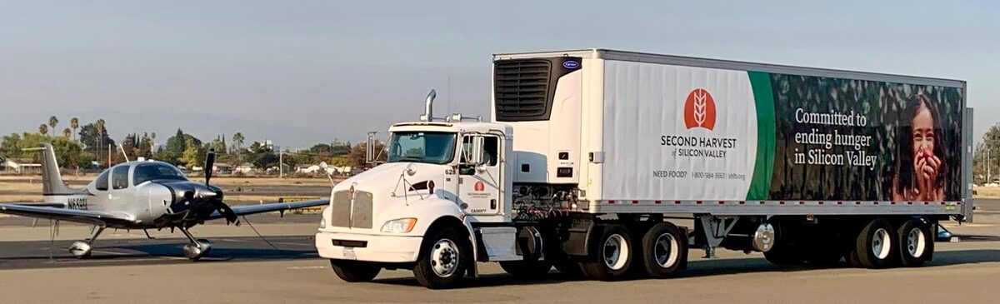

Welcome to CalDART

Volunteer pilots, aircraft, and ground crews for California's disasters.
Mission: CalDART organizes California pilots and ground personnel to provide volunteer disaster air transportation services to benefit communities experiencing a major earthquake, flood, or other disaster.
California has some 28,000 aircraft and 54,000 pilots. Most of them would help after a disaster if they knew how, and CalDART is the way they do: twelve local Disaster Airlift Response Teams, each based at a general aviation airport, each able to fly people and supplies between any of the state's roughly 250 public airports under Part 91 rules.
Every DART runs a practice mobilization exercise at least once a year, and invites county emergency managers, the local VOAD groups (Volunteer Organizations Active in Disaster, the nonprofits that coordinate relief work), and neighboring DARTs to take part. A DART can call for mutual aid from other DARTs, from CalDART members and friends, and from pilots anywhere in the state.
Latest news
- Spring exercise moves 4,200 lb of supplies between Livermore and Watsonville14 April 2026
- Twelve aircraft from six DARTs flew a simulated post-earthquake resupply, with WEACT receiving, weighing, and staging every load.
- Winter storm activation: three flights for county emergency management2 March 2026
- Pilots from Watsonville and Reid-Hillview carried water-testing kits, a generator, and two public health staff after Highway 1 closed.
- Annual meeting set for 7 June at Reid-Hillview19 February 2026
- Elections, the treasurer's report, and a briefing from county emergency management.
Missions flown
| 2023 | Snowstorms trapped 20,000 people in the San Bernardino Mountains. CalDART used helicopters to deliver 21,000 lb of medical supplies and food to several locations. |
| 2022 | A magnitude 6.4 earthquake in Humboldt County brought down power lines, damaged roads, and cut off towns. CalDART flew emergency supplies to Fortuna for local volunteers to distribute. |
| 2021 | The Dixie Fire left 200 students without back-to-school supplies. CalDART carried 1,100 lb of them from Chino to Quincy. |
| 2021 | CalDART flew PPE and medical gowns from Santa Barbara to the Yurok Tribe on the Klamath River. |
| 2021 | Twenty-three aircraft carried 4,800 lb of KN-95 masks, trundle beds, and other medical supplies from Santa Barbara to firefighters near Eugene, Oregon. |
| 2020 | Face shields from Palo Alto to Walla Walla, Washington, and ventilators from San Diego to Sacramento. |